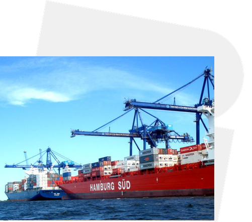
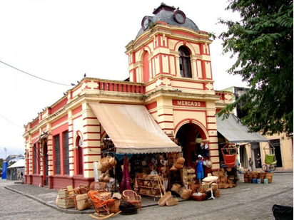

aaaaaaaaaaaaaaaaaaaaaaaaaaaaaaaaaaaaaaaaaaaaaaaaaaaaaaaaaaaaaaaaaaaaaaaaaaaaaa
O Porto de Paranaguá (PR) é o maior porto exportador de produtos agrícolas do Brasil e o principal terminal graneleiro da América Latina. Localizado no litoral do Paraná, destaca-se pela eficiência operacional e pela diversidade de cargas movimentadas, de grãos e fertilizantes a contêineres e automóveis. Em 2024, o porto atingiu a marca histórica de 66,7 milhões de toneladas movimentadas, consolidando-se como um dos principais centros logísticos e comerciais do país.


Mercado Municipal de Artesanato
Construção em estilo neo-renascentista, era o antigo mercado de peixes da cidade e servia à comunidade dos pescadores que ali vinham comercializar os seus pescados. Funcionava sempre de madrugada e ao anoitecer. Foi recuperado para servir como ponto de venda do artesanato típico da região.
Fonte: Secretária Municipal de Cultura e Turismo de Paranaguá
Mercado Municipal de Paranaguá
Inaugurado em 29 de Julho de 2009, em comemoração aos 361 anos de Paranaguá. Possui no térreo vários boxes onde são comercializados os artesanatos da região, hortaliças, frutas, grãos e especiaria. No piso superior estão os restaurantes que servem frutos do mar e comida variada e uma floricultura.
Fonte: Secretária Municipal de Cultura e Turismo de Paranaguá
Mercado Municipal do Café
O Mercado Municipal do Café é um dos pontos gastronômicos tradicionais da cidade de Paranaguá, com restaurantes que servem refeições a base de frutos do mar e comida típica, e lanchonetes que oferecem pastéis e banana recheada fritos na hora, além de outros salgados e porções.
Fonte: Secretária Municipal de Cultura e Turismo de ParanaguáLinha do Tempo: Mercado da
Clique nos pontos para visualizar cada época da história do mercado.